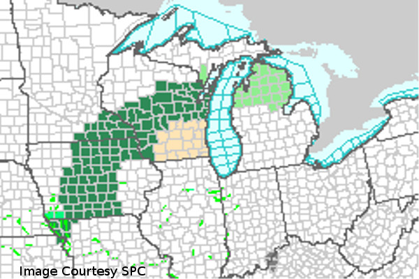

Top Story:Flooding to Impact Upper Midwest
 6/11/2015: Flash Flood warnings are in effect until Friday morning across Wisconsin, Minnesota, and Iowa, as steady and occasionally heavy rainfall with persist for the next 24 hours. A large complex of rain has developed over the upper Midwest and is set to drop anywhere between one to four inches of rain, causing flooding in river valleys and urban areas. Light rain has initiated in Wisconsin under an area of upper level jet divergence. Stronger rain has formed further south, ahead of a stationary front associated with a mature cyclone. Rain will continue to fall as it is fed by gulf moisture, until the systems moves off to the northeast Friday afternoon.
 Up to date weather for Green Bay
Up to date weather for Green Bay